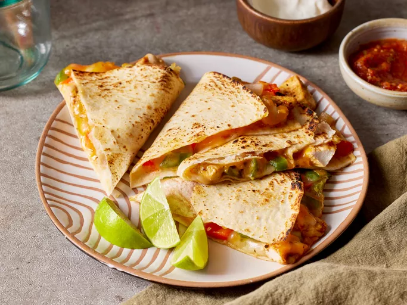

Chicken Quesadillas

Description
This chicken quesadilla recipe is great to make for parties. Zesty chicken, cooked peppers, and melted cheese are a delightful combination. Cut into wedges and serve with sour cream and salsa.
Ingredients
- 1 pound skinless, boneless chicken breast, diced
- 1 packet fajita seasoning
- 1 tablespoon vegetable oil
- 2 green bell peppers, chopped
- 2 red bell peppers, chopped
- 1 onion, chopped
- 10 flour tortillas
- 8oz shredded cheddar cheese
- 8oz shredded monterey jack cheese
- 1 tablespoon bacon bits
Steps
- Season the chicken, then broil it until it's cooked through.
- Cook the vegetables with the broiled chicken.
- Layer the mixture onto half of the tortilla, then top with cheese and bacon.
- Fold the tortillas and bake until the cheese is melted.
- Cut the quesadillas into wedges.